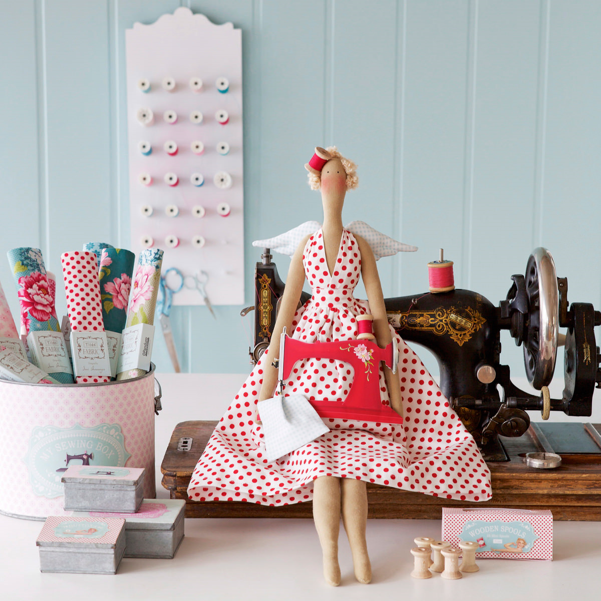

Tilda is a craft brand founded by Norwegian designer Tone Finnanger in 1999. There is a certain attitude to life in Tilda’s world, whimsical and romantic, like a ball gown worn with wellies – perfectly imperfect.The Tilda range consists of craft products such as fabric, paper and accessories, as well as home products and craft books.
